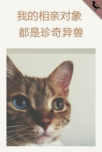
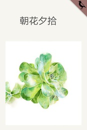
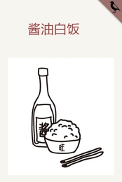

近期热门
更多热门

本周热门免费文章
-
1.
没有猫狗不成人家
奶奶还在世的时候，喜欢斜靠在门前的躺椅上闭目养神。有时候悠悠闲闲地吐出一句话：“没有猫狗不成人家。”“没那些噢！”...
- 2. 月预算不到300软的你该用哪些性价比超高的护肤品
- 3. 瑶瑶，你有没有穿秋裤？
- 4. 买买买是一种什么病？
- 5. 似我者死
- 6. 大鱼·脱线
- 7. 爱我你就吃苦瓜
- 8. 小青
- 9. 学渣可不是白当的
- 10. 无锡：风声雨声读书声，都付笑谈中
本周热门收费文章
-
1.
百十二：巨浪冲击下的中流砥柱（5）
本期《雀圣哲也》、《鬼眼狂刀》、《抓狂一族》、《悟空道》。星野泰视作画、佐浮铭原案的《雀圣哲也》（哲也-雀聖と呼ばれた...
- 2. 兵者不祥【道德经第三十一章】
- 3. “关上”大脑，“打开”心
- 4. 3.“关上”大脑，“打开”心麦子
- 5. 似我者死
- 6. 大鱼·脱线
- 7. 爱我你就吃苦瓜
- 8. 小青
- 9. 学渣可不是白当的
- 10. 无锡：风声雨声读书声，都付笑谈中
最新文章
最近完结
更多完结
新开专栏
更多专栏
- 
- 
- 
什么是专栏